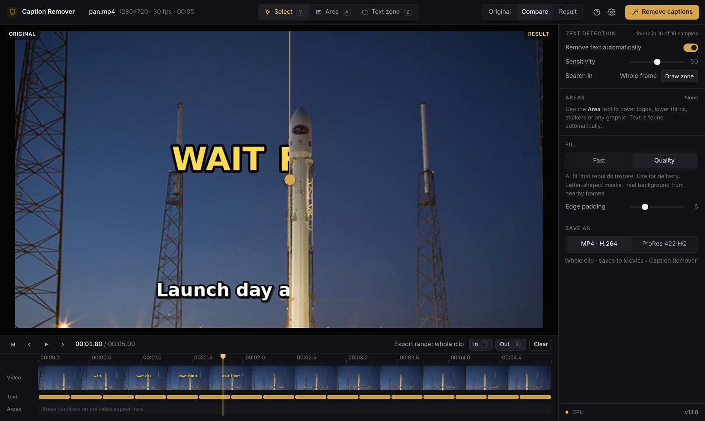

Subtitles, social captions, caption boxes, logos and lower thirds, cleaned up on your own computer by AI that rebuilds what was behind them.

Drop in a clip, check one frame, press one button. Your video never leaves your computer.
Subtitles, word-by-word social captions and titles are detected on every frame, even when they pop on and off.
White or coloured caption plates behind the words are removed completely, not just the letters.
When the camera or text moves, it copies what was actually behind the caption from nearby frames. AI fills only the rest.
Draw over lower thirds, watermarks on your own footage, stickers or emojis, and set when each one applies on the timeline.
A draggable compare split shows the exact final result on any frame before you commit.
MP4 or ProRes 422 HQ with the original audio, straight into Premiere, Resolve or Final Cut.
The download is small. On first launch the app sets up its AI components (about 1.5 GB), once.
No. Everything runs on your own computer. The internet is only used to download the app, its components and updates.
It depends on your machine and the clip. Apple Silicon Macs use their built-in GPU, and Windows PCs with an NVIDIA card use it automatically. Fast mode is quick for checks; Quality mode takes longer and gives the cleanest result.
Use Compare to check a frame, then raise Edge padding or Sensitivity, or draw an Area over it. Big captions over busy, fast camera moves are the hardest case.
The app isn't code-signed with Apple and Microsoft yet, so they ask you to confirm you trust it. This only happens on first launch.
The app checks when it opens and shows "Update available". One click installs it in seconds, and your settings are kept.